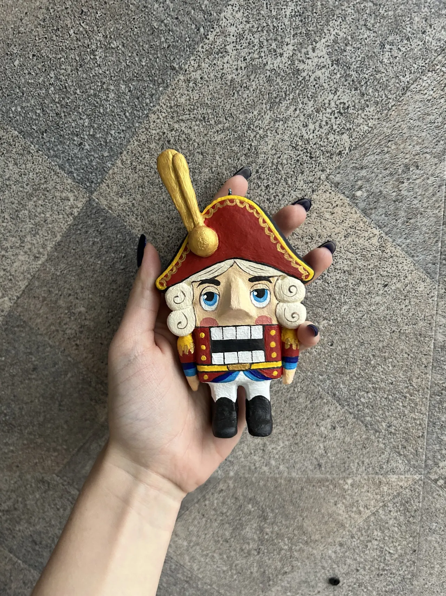
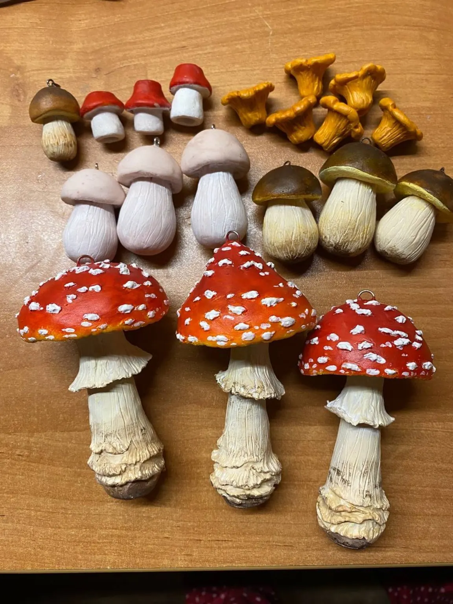
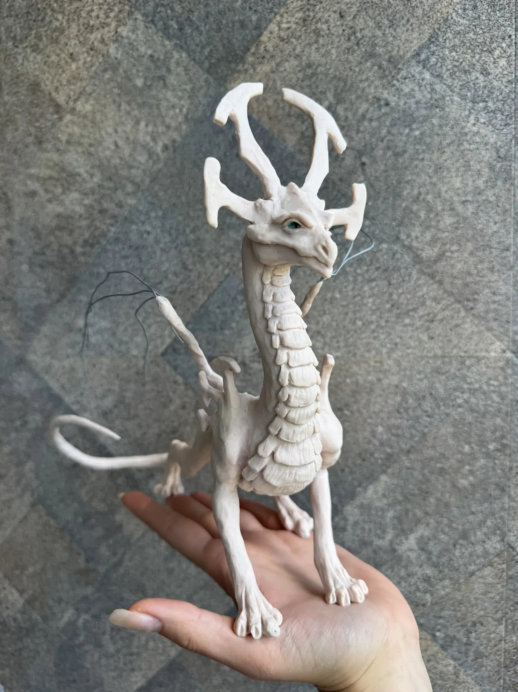
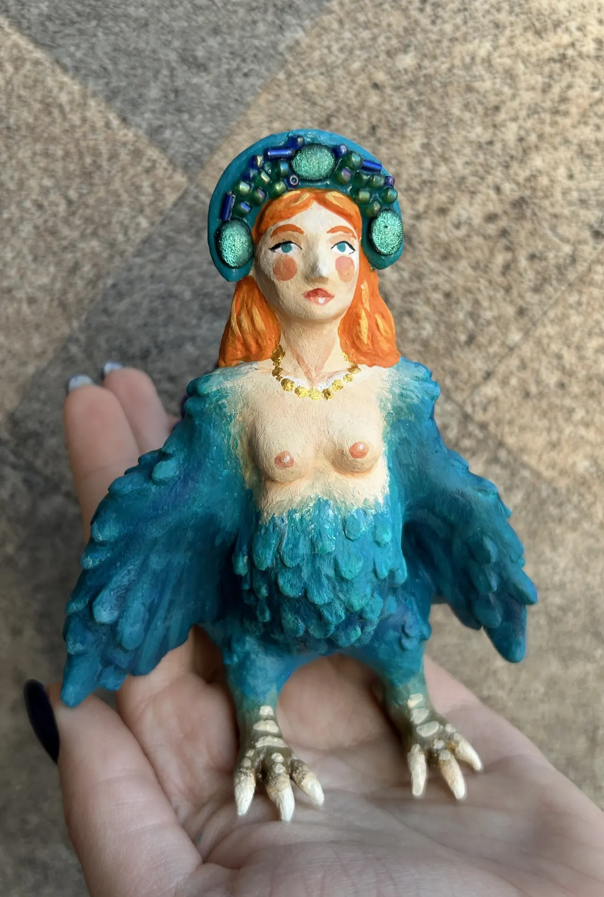

Скоро
Новая история
Следующая коллекция уже начинает рождаться в Мастерской.
Авторские серии
Каждая коллекция объединяет Жителей общей атмосферой, образами и источником вдохновения.

Жители, связанные с зимой, Новым годом, морозными узорами, снегом и ощущением праздничного чуда.

Образы, вдохновлённые лесом, его растениями, животными и скрытыми среди деревьев историями.

Драконы, русалки, грифоны и другие мифические существа из сказок и легенд.

Сказочные и авторские персонажи, вдохновлённые русским фольклором и атмосферой старых историй.
Скоро
Следующая коллекция уже начинает рождаться в Мастерской.